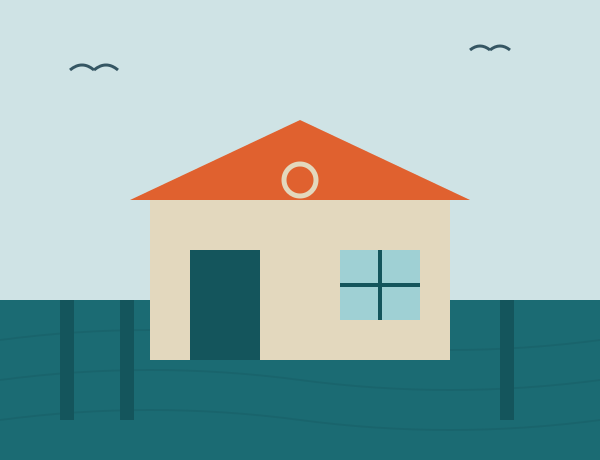

We make fishing gear, kayaks, and beach equipment from recycled ocean plastic and fishing rope. Every purchase cleans a section of coastline in New England.
In 2009, co-founders Mara Ellison and Cole Vantry had had enough of pulling plastic trash out of Massachusetts Bay every spring. From their used, leaking boat shed at the Scituate town pier, they created their first product: a tackle box made of beach plastic and chopped-up lobster-pot rope.
The tackle boxes sold out at the local bait shop in two days. Word of their work traveled up the coast with their business, which has grown into a coastal outfitters, adding apparel in 2013, a line of recycled-hull kayaks in 2017, and a specialized cleanup gear division in 2021.
42.1959° N, 70.7256° W · TideLine Pier, Scituate MA

A ton of companies make excellent coastal gear. This is how shopping at TideLine differs from shopping the shelf next to ours:
Our business model is intrinsically linked to SDG 14: Life Below Water, the goal to sustainably use and protect the oceans and their marine resources. We prevent ocean plastic pollution and help recover lost gear, while also funding coastline cleanups. Our product development, focused on longevity and repair, supports SDG 12, Responsible Consumption and Production.